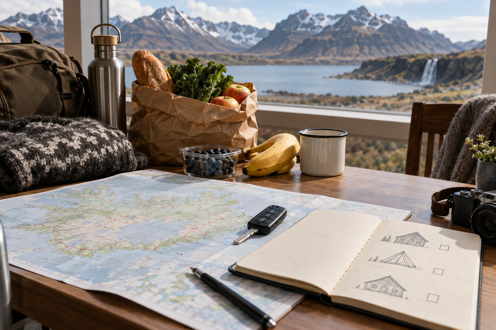
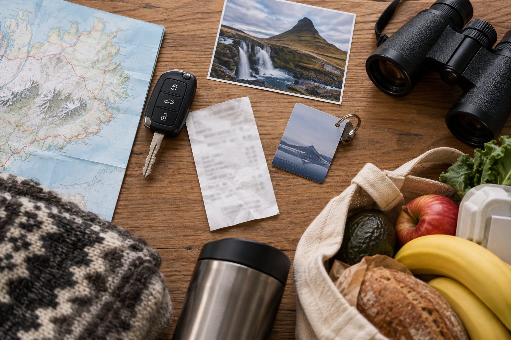
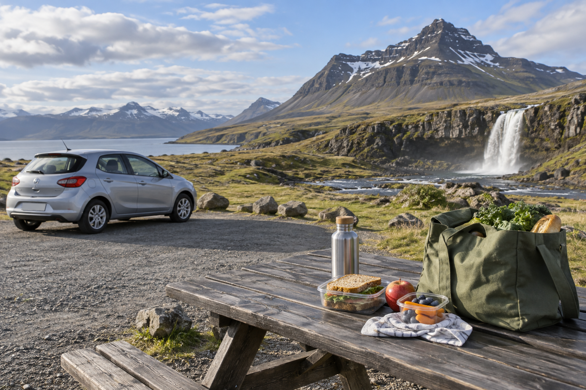

Iceland Trip Cost: Budget for 3, 5, 7 and 10 Days
Iceland is not a cheap destination, but a first trip does not need to become unmanageable if you understand where the money goes. Accommodation, transport, food, and paid activities usually make the biggest difference, while many of Iceland's famous natural sights can be visited without buying a traditional attraction ticket.
For a first-time traveler, a realistic Iceland budget should be built around trip length and travel style, not a single daily number. A three-day Reykjavík-based trip can cost very differently from a ten-day Ring Road trip with a rental car, rural hotels, fuel, and several guided activities.
This guide compares realistic budgets for 3, 5, 7, and 10 days in Iceland. The estimates below are designed for planning rather than fixed quotes. Prices change with season, availability, exchange rates, vehicle type, room type, and how early you book.
Quick Iceland Trip Cost Overview

The following estimates are per person, assuming two adults share accommodation and a rental car when needed.
International flights are not included.
| Trip Length | Budget Style | Mid-Range | Comfortable |
|---|---|---|---|
| 3 days | $450–$700 | $750–$1,100 | $1,300–$2,000 |
| 5 days | $800–$1,200 | $1,300–$1,900 | $2,300–$3,300 |
| 7 days | $1,100–$1,650 | $1,800–$2,600 | $3,000–$4,500 |
| 10 days | $1,600–$2,400 | $2,600–$3,800 | $4,300–$6,500+ |
These ranges are broad on purpose.
A July Ring Road trip booked late can cost much more than an October Reykjavík trip booked carefully.
What Does “Budget,” “Mid-Range,” and “Comfortable” Mean?
Before comparing trip lengths, it helps to define the travel styles.
Budget Traveler
A budget Iceland trip may include:
- ✓Hostel or simple guesthouse
- ✓Shared or inexpensive private room
- ✓Groceries for several meals
- ✓Bakeries or simple takeaway food
- ✓Few paid activities
- ✓Public transport or shared car costs
- ✓Free natural attractions
- ✓Reykjavík public pools instead of premium lagoons
Budget travel does not mean ignoring safety, buying the wrong rental vehicle, or choosing accommodation that creates excessive driving.
Mid-Range Traveler
This is the most useful category for many first-time visitors.
Expect:
- ✓Private hotel or guesthouse room
- ✓Standard rental car where appropriate
- ✓Mix of restaurants and groceries
- ✓One or two paid experiences
- ✓Comfortable airport transfer
- ✓Well-located accommodation
This is the style I would use as the main planning benchmark.
Comfortable Traveler
A comfortable budget may include:
- ✓Better hotels
- ✓Larger or upgraded rental vehicle
- ✓Restaurant meals most days
- ✓Premium geothermal spa
- ✓Guided glacier or wildlife activities
- ✓Convenient hotel locations
- ✓Private or upgraded transfers
Luxury travel can go much higher than the estimates in this guide.
What Is Included in These Iceland Budget Estimates?
The planning ranges include:
- ✓Accommodation
- ✓Local transportation
- ✓Rental car where appropriate
- ✓Fuel
- ✓Food
- ✓Basic parking and local transport
- ✓Some activities
- ✓Airport transfer when needed
They do not include:
- ✓International airfare
- ✓Shopping
- ✓Major luxury purchases
- ✓Extensive alcohol spending
- ✓Premium suites
- ✓Business-class flights
- ✓Large private tours
Why International Flights Are Kept Separate
Your airfare depends heavily on:
- ✓Country of origin
- ✓Departure airport
- ✓Season
- ✓Airline
- ✓Baggage
- ✓Booking date
A traveler flying from London may have a completely different airfare from someone flying from:
- ✓New York
- ✓Toronto
- ✓Dubai
- ✓Singapore
Mixing international airfare into one “Iceland trip cost” number makes the estimate less useful.
Build the Iceland ground budget first, then add your real flight quote.
The Biggest Iceland Trip Expenses

For most first-time trips, costs usually fall into five main groups.
1. Accommodation
Often one of the largest expenses.
Costs can rise sharply in:
- ✓July
- ✓August
- ✓Popular South Coast locations
- ✓Small Ring Road towns
Two travelers sharing one room usually have a much lower per-person cost than a solo traveler paying the full room price.
2. Rental Car or Tours
A self-drive trip adds:
- ✓Daily rental
- ✓Insurance
- ✓Fuel
- ✓Parking
- ✓Possible additional-driver fees
A non-driving trip may replace these costs with:
- ✓Airport transfers
- ✓Golden Circle tour
- ✓South Coast tour
- ✓Northern Lights tour
- ✓Other excursions
Do not assume tours are automatically cheaper than renting a car for two people.
3. Food
Food can become expensive if every meal is:
restaurant breakfast + restaurant lunch + restaurant dinner.
You can reduce this cost substantially by mixing:
- ✓Hotel breakfast
- ✓Groceries
- ✓Bakery food
- ✓Simple lunches
- ✓Selected restaurant dinners
4. Activities
Iceland's landscapes provide many of the major experiences without a traditional admission ticket.
But paid experiences can add up quickly.
Examples include:
- ✓Glacier hike
- ✓Whale watching
- ✓Ice cave
- ✓Horse riding
- ✓Premium geothermal lagoon
- ✓Northern Lights tour
- ✓Snorkeling
- ✓Guided Highlands experience
5. Season
Season can affect almost every other category.
Peak summer can increase demand for:
- ✓Hotels
- ✓Rental cars
- ✓Campervans
Winter may offer lower accommodation prices on some dates, but can shift spending toward:
- ✓Guided tours
- ✓Different vehicle choices
- ✓More flexible bookings
For seasonal planning, use Best Time to Visit Iceland: Weather, Crowds and Costs.
How Much Does Accommodation Cost in Iceland?
There is no useful single hotel price for the whole country.
For planning, think in broad room ranges rather than exact quotes.
Budget Accommodation
Rough planning range:
$50–$100 per person per night
when using:
- ✓Hostel beds
- ✓Shared facilities
- ✓Simple guesthouses
- ✓Two people splitting an inexpensive room
Mid-Range Accommodation
A useful planning range for two adults sharing:
about $180–$300 per room per night
with popular summer locations sometimes higher.
Per person, that is roughly:
$90–$150
before taxes or extras where applicable.
Comfortable Accommodation
Better properties can easily reach:
$300–$500+ per room per night
depending on:
- ✓Location
- ✓Season
- ✓Room type
- ✓Availability
Rural Iceland can sometimes be expensive because there may be limited supply exactly where your route needs an overnight stop.
Why Rural Hotel Cost Matters So Much
In Reykjavík, you may have many alternatives.
On the road between major regions, you may need to sleep within a relatively small geographic area.
If the best-value rooms sell out near:
- ✓Vík
- ✓Jökulsárlón region
- ✓Mývatn
- ✓East Iceland
you may face a choice between:
- ✓Higher room price
- ✓Longer drive
That is why route-critical accommodation should be booked early during high-demand periods.
Solo Traveler vs Couple Costs
A solo traveler should expect a higher per-person cost for:
- ✓Hotels
- ✓Rental car
- ✓Fuel
because there is nobody to split those expenses with.
Food and activity costs change less.
Example
If a room costs:
$220
then:
Couple
$110 per person.
Solo Traveler
$220.
The same applies to a rental car.
This is why Iceland can become noticeably more expensive for solo self-drivers.
Family Costs Work Differently
Families may benefit from:
- ✓Shared car
- ✓Apartment accommodation
- ✓Grocery meals
- ✓Child discounts on some services
But may pay more for:
- ✓Larger vehicle
- ✓Larger room
- ✓Family apartment
- ✓Multiple activity tickets
Do not calculate a family budget by multiplying a solo-traveler number by four.
Build the family budget by category.
How Much Should You Budget for Food?
Food is one of the easiest expenses to control.
A reasonable planning framework per person is:
Budget Food
$25–$45 per day
using:
- ✓Groceries
- ✓Bakery food
- ✓Simple meals
- ✓Hotel breakfast where included
Mid-Range Food
$55–$90 per day
using a mix of:
- ✓Cafe lunch
- ✓Groceries
- ✓Restaurant dinner
Comfortable Food
$100–$160+ per day
if you eat in restaurants regularly and order more expensive meals.
Alcohol can increase the daily total quickly and is not included in these broad food estimates.
How to Spend Less on Food Without Eating Poorly

A useful Iceland food strategy is:
Breakfast
Hotel breakfast or groceries
Lunch
Bakery, cafe, sandwich, or packed food
Dinner
Restaurant
This still lets you enjoy Icelandic food while reducing the need for three full restaurant meals every day.
Grocery Shopping Is Especially Useful on Road Trips
Road-trip food is not only about saving money.
It also protects you when:
- ✓Restaurant hours are limited
- ✓You arrive late
- ✓Weather changes the schedule
- ✓Rural choices are limited
Useful items include:
- ✓Fruit
- ✓Bread
- ✓Skyr
- ✓Sandwich ingredients
- ✓Snacks
- ✓Drinks
Do not rely on finding a full restaurant exactly when you become hungry.
Cheap Local Experience: Reykjavík Swimming Pools
You do not need a premium geothermal lagoon every time you want hot water.
Reykjavík's municipal swimming pools are an important part of local culture and are much cheaper than premium spa-style experiences.
For 2026, a standard adult single admission is about:
1,500 ISK.
That makes a public pool one of the best-value cultural experiences in Reykjavík.
You can still book a premium lagoon if it is important to you.
The point is that geothermal bathing does not need to dominate the budget.
Airport Transfer Cost Matters More on a Short Trip
If you do not rent a car at KEF, include airport transport in your budget.
A current standard Flybus adult fare from Keflavík Airport to Reykjavík's BSÍ terminal is:
3,999 ISK one way
while hotel-transfer service costs more.
For a three-day trip, two airport transfers represent a larger percentage of total spending than they do on a ten-day road trip.
How Much Does a Rental Car Add?
Rental pricing changes too much by:
- ✓Month
- ✓Car class
- ✓Insurance
- ✓Transmission
- ✓Pickup location
- ✓Booking date
to use one fixed rate.
For initial planning, expect your vehicle to be one of the major trip expenses.
When comparing cars, calculate:
rental + insurance + fuel + parking
rather than looking only at the daily headline rate.
The later Renting a Car in Iceland: 2WD vs 4WD, Insurance and Costs article will cover rental costs properly.
Do You Need a Rental Car to Save Money?
No.
A car may be good value when:
- ✓Two or more people share it
- ✓You are moving between rural hotels
- ✓You want several road-trip days
It may be poor value when:
- ✓You stay in Reykjavík
- ✓You use it only one day
- ✓It sits parked during city sightseeing
Choose the transport style first.
Then compare the total cost.
How Much Do Free Attractions Save?
A lot.
Many classic Iceland experiences do not operate like expensive theme-park attractions.
You can see major landscapes such as:
- ✓Waterfalls
- ✓Beaches
- ✓Viewpoints
- ✓Geothermal landscapes
without buying a large admission package.
However, some locations may have:
- ✓Parking fees
- ✓Facility fees
and guided experiences cost extra.
Do not make the mistake of budgeting:
$0 for sightseeing
simply because nature itself is free to view.
3-Day Iceland Trip Cost
A three-day trip works best financially when you keep the structure simple.
Common trip styles include:
- ✓Reykjavík + tours
- ✓Reykjavík + short self-drive
- ✓Reykjavík + Golden Circle + part of South Coast
The exact sightseeing route belongs in the dedicated itinerary article. Here we are only looking at spending.
3-Day Budget Traveler
Accommodation
Approximately:
$150–$300
per person for the trip.
Food
About:
$75–$135
Local Transport / Airport Transfer
About:
$60–$130
depending on whether you use buses, transfers, or share some car costs.
Activities
About:
$50–$100
if you focus mainly on:
- ✓Free sights
- ✓Public pools
- ✓One lower-cost experience
Miscellaneous
About:
$30–$50
Estimated Total
$450–$700 per person
excluding international flights.
How a Budget 3-Day Trip Works
The traveler is likely to:
- ✓Stay in a hostel or low-cost guesthouse
- ✓Use groceries and bakery food
- ✓Choose one main paid tour or split car costs
- ✓Use public geothermal pools
- ✓Avoid premium restaurants and expensive activities
The biggest challenge is transportation.
If you book multiple full-day tours, your total may move out of the budget range quickly.
3-Day Mid-Range Trip
A mid-range traveler may use:
- ✓Private hotel room
- ✓Airport coach
- ✓One or two organized tours or short car rental
- ✓Restaurant dinner
- ✓One paid experience
Approximate Breakdown Per Person
| Category | 3-Day Mid-Range Estimate |
|---|---|
| Accommodation | $300–$450 |
| Food | $165–$270 |
| Transport | $120–$220 |
| Activities | $100–$200 |
| Miscellaneous | $50–$75 |
| Total | $750–$1,100 |
The upper end becomes more likely during summer or if you book several tours.
3-Day Comfortable Trip
A comfortable trip may include:
- ✓Better Reykjavík hotel
- ✓Hotel airport transfer
- ✓Premium geothermal experience
- ✓Restaurant meals
- ✓Private or higher-end tour
Approximate Total
$1,300–$2,000 per person
excluding international flights.
It is easy to exceed this if you add:
- ✓Luxury accommodation
- ✓Private tours
- ✓Premium dining
Is a 3-Day Self-Drive Cheaper Than Tours?
For two travelers, it can be.
But compare the full cost.
Self-Drive
- ✓Rental
- ✓Insurance
- ✓Fuel
- ✓Parking
Tour-Based
- ✓Airport transfer
- ✓Golden Circle tour
- ✓South Coast tour
For a very short trip, the difference may be smaller than expected.
Choose based on:
- ✓Comfort
- ✓Season
- ✓Route
not only price.
3-Day Couple Budget
For two adults traveling together, a realistic ground-cost target might be:
Budget
$900–$1,400 total
Mid-Range
$1,500–$2,200 total
Comfortable
$2,600–$4,000 total
again excluding international flights.
Sharing the room and transport is what makes couple travel more efficient.
5-Day Iceland Trip Cost
Five days is where transportation becomes a larger planning decision.
A first-time five-day trip often includes more travel outside Reykjavík, so you may need:
- ✓Rental car
- ✓More rural accommodation
- ✓More fuel
At the same time, you have more opportunities to save through:
- ✓Grocery meals
- ✓Free natural sights
- ✓Shared vehicle costs
5-Day Budget Traveler
A budget five-day road trip requires more planning than a budget Reykjavík stay.
You may need to combine:
- ✓Simple guesthouses
- ✓Hostel rooms
- ✓Grocery food
- ✓Small rental car shared by two people
- ✓Mostly free attractions
Approximate Breakdown Per Person
| Category | 5-Day Budget Estimate |
|---|---|
| Accommodation | $300–$500 |
| Food | $125–$225 |
| Transport + fuel | $220–$350 |
| Activities | $50–$100 |
| Miscellaneous | $50–$75 |
| Total | $800–$1,200 |
The lower end is easier:
- ✓Outside peak summer
- ✓With two people splitting costs
- ✓With early booking
Can You Do 5 Days for Under $800?
Possibly.
But it becomes much easier if:
- ✓Accommodation is unusually cheap
- ✓You use hostel beds
- ✓You avoid car rental or split it with several people
- ✓You prepare most meals
- ✓You skip expensive activities
I would not use:
under $800
as the normal first-time expectation.
A little budget margin makes the trip much easier.
5-Day Mid-Range Iceland Budget
This is the range I would recommend using for initial planning.
Expect:
- ✓Private accommodation
- ✓Standard self-drive car where appropriate
- ✓Mix of groceries and restaurants
- ✓One or two paid activities
- ✓Reasonable booking flexibility
Approximate Breakdown Per Person
| Category | 5-Day Mid-Range Estimate |
|---|---|
| Accommodation | $500–$750 |
| Food | $275–$450 |
| Rental/transport + fuel | $300–$450 |
| Activities | $150–$250 |
| Miscellaneous | $75–$100 |
| Total | $1,300–$1,900 |
This is a broad but practical range.
Peak summer may push:
- ✓Hotels
- ✓Vehicle rental
toward or above the upper end.
5-Day Comfortable Budget
A more comfortable trip may include:
- ✓Better hotels
- ✓SUV or upgraded vehicle
- ✓Restaurant dining
- ✓Premium geothermal spa
- ✓Guided glacier experience
- ✓More flexible accommodation
Estimated Total
$2,300–$3,300 per person
excluding international flights.
A premium glacier tour, luxury lagoon, and higher-end hotels can move this higher quickly.
5-Day Couple Budget
For two adults sharing hotel and car costs:
Budget
$1,600–$2,400 total
Mid-Range
$2,600–$3,800 total
Comfortable
$4,600–$6,600 total
These are planning ranges, not package prices.
3 Days vs 5 Days: Which Gives Better Value?
Five days usually produces a higher total bill.
But it can provide better value per travel day because fixed costs such as:
- ✓Airport transfer
- ✓International airfare
are spread over more time.
For example, paying hundreds of dollars to fly to Iceland for only three days can make each day effectively expensive.
Five days gives you more experience without doubling every category.
Does a Longer Trip Always Cost More Per Day?
Not necessarily.
Some daily costs can fall on longer trips because you may:
- ✓Use more grocery meals
- ✓Spend fewer nights in Reykjavík
- ✓Take fewer organized tours
- ✓Spread rental fees across more days
But total spending still rises.
This is why both:
total budget
and:
average daily cost
matter.
A Useful Daily Budget Range
For initial planning, excluding international flights:
Budget
$150–$240 per person per day
Mid-Range
$250–$380 per person per day
Comfortable
$430–$650+ per person per day
These are not strict formulas.
They work better as a quick reality check.
Why You Should Not Multiply Daily Cost Blindly
A 10-day trip is not simply:
10 × a three-day daily budget.
Longer trips change the cost mix.
For example:
- ✓Airport transfer happens once each way
- ✓Ring Road adds fuel
- ✓Rural hotels may cost more
- ✓Longer trips may include more grocery meals
- ✓Paid activities may not happen every day
That is why this guide calculates each trip length separately.
Summer vs Winter Trip Cost
Season can dramatically affect where your money goes.
Summer
You may spend more on:
- ✓Hotels
- ✓Rental cars
- ✓Campervans
because demand is high.
Winter
You may find lower accommodation demand on some dates, but could spend more on:
- ✓Guided excursions
- ✓Transport
- ✓Flexible bookings
Do not assume:
winter = cheap
or:
summer = impossible.
Compare the complete trip.
Why Booking Time Matters
Recent official accommodation statistics show very strong summer demand in Iceland.
In 2025, nationwide hotel occupancy reached around:
- ✓89% in July
- ✓90% in August
That means late bookings can reduce your ability to choose based on price.
You may end up paying more simply because cheaper rooms in the right locations have already sold.
Budget Rule: Pay for Location Before Luxury
For a road trip, a simple guesthouse in the right town can be better value than a cheaper hotel 60–90 minutes away.
A bad accommodation location adds:
- ✓Fuel
- ✓Driving time
- ✓Fatigue
The cheapest room is not always the cheapest trip.
The Most Important Cost Rule
Build the Iceland budget in this order:
- ✓Accommodation
- ✓Transport
- ✓Food
- ✓Activities
- ✓Buffer
Do not start by choosing five expensive activities and then try to squeeze the essential costs around them.
Accommodation and transport determine whether the trip works.
Activities come after.
7-Day Iceland Trip Cost
Seven days is one of the strongest trip lengths for a first visit.
It gives you enough time for:
- ✓Reykjavík
- ✓Golden Circle
- ✓South Coast
- ✓Southeast Iceland
- ✓A slower regional route
- ✓Optional western extension
without requiring the full Ring Road.
From a budget perspective, seven days is where the trip begins to feel substantially different from a short Reykjavík stay.
You now have more:
- ✓Accommodation nights
- ✓Driving
- ✓Fuel
- ✓Grocery opportunities
- ✓Rural hotel stays
but you do not necessarily need more paid activities.
7-Day Budget Traveler
A budget traveler should focus on:
- ✓Simple accommodation
- ✓Shared rental-car costs
- ✓Groceries
- ✓Few paid activities
- ✓Free natural sights
- ✓Local pools
A seven-day trip can still be affordable by Iceland standards if you control the two largest categories:
accommodation + transport.
Approximate 7-Day Budget Per Person
| Category | Estimate |
|---|---|
| Accommodation | $450–$700 |
| Food | $175–$315 |
| Transport + fuel | $300–$450 |
| Activities | $75–$150 |
| Parking/miscellaneous | $75–$100 |
| Estimated Total | $1,100–$1,650 |
This assumes two adults share:
- ✓Accommodation
- ✓Vehicle costs
Solo travelers should expect a higher total.
What Does a Budget 7-Day Trip Look Like?
A budget-conscious couple might use:
- ✓Hostel/private guesthouse mix
- ✓Standard 2WD when appropriate
- ✓Grocery breakfast
- ✓Packed lunch
- ✓Selected restaurant dinners
- ✓One paid experience
- ✓Municipal pools
The main sightseeing could still include:
- ✓Golden Circle
- ✓Waterfalls
- ✓Black-sand beaches
- ✓Glacier views
- ✓Coastal landscapes
You do not need an expensive tour every day.
Can You Spend Under $1,000 for 7 Days?
It is possible in the right circumstances.
For example:
- ✓Hostel beds
- ✓Camping
- ✓Larger group splitting a car
- ✓Heavy grocery use
- ✓Few paid activities
- ✓Shoulder-season travel
But I would not use:
$1,000 per person
as the standard first-time target for a comfortable road trip.
Give the budget some margin.
Unexpected costs are easier to handle when every category is not already at its absolute minimum.
7-Day Mid-Range Iceland Budget
For many first-time visitors, this is the most realistic category.
You may have:
- ✓Private accommodation
- ✓Standard rental car
- ✓Well-located rural stays
- ✓Mix of restaurants and groceries
- ✓One or two paid experiences
- ✓Some parking and local fees
Approximate 7-Day Mid-Range Budget
| Category | Estimate |
|---|---|
| Accommodation | $700–$1,050 |
| Food | $385–$630 |
| Transport + fuel | $400–$600 |
| Activities | $200–$350 |
| Parking/miscellaneous | $100–$150 |
| Estimated Total | $1,800–$2,600 |
This is the range I would use when creating an initial budget for a normal first-time couple.
7-Day Comfortable Iceland Budget
A comfortable traveler might choose:
- ✓Better hotels
- ✓Larger vehicle
- ✓Restaurant meals most days
- ✓Premium geothermal lagoon
- ✓Glacier activity
- ✓Whale watching or another tour
- ✓More convenient room locations
Approximate Total
$3,000–$4,500 per person
excluding international airfare.
This can rise further with:
- ✓Luxury hotels
- ✓Private tours
- ✓Premium dining
- ✓Large SUV
- ✓Several high-cost activities
7-Day Couple Budget
For two adults sharing accommodation and transport:
Budget
$2,200–$3,300 total
Mid-Range
$3,600–$5,200 total
Comfortable
$6,000–$9,000 total
excluding international flights.
Does 7 Days Cost Much More Than 5 Days?
The total is higher, but the increase is not proportional to every category.
For example:
Airport Transfer
Usually paid only:
- ✓Once on arrival
- ✓Once on departure
Rental Car
Adds daily cost.
Accommodation
Adds two nights.
Food
Adds two days.
Activities
Do not have to increase.
You can spend seven days in Iceland and still book only:
one or two major paid activities.
That is one reason longer trips do not need to become financially extreme.
Where Should a 7-Day Traveler Spend More?
If budget allows, prioritize:
Accommodation Location
A better overnight location can reduce:
- ✓Fuel
- ✓Driving
- ✓Fatigue
Suitable Rental Vehicle
Choose the vehicle needed for:
- ✓Route
- ✓Season
not simply the cheapest listing.
One Memorable Paid Activity
For example:
- ✓Glacier hike
- ✓Whale watching
- ✓Geothermal lagoon
You do not need all three.
Where Can a 7-Day Traveler Save?
Good places to reduce spending include:
- ✓Grocery breakfasts
- ✓Packed lunches
- ✓Public swimming pools
- ✓Fewer premium spas
- ✓Fewer guided tours
- ✓Simple rural guesthouses
Do not cut:
- ✓Required vehicle suitability
- ✓Safe accommodation location
- ✓Proper clothing
- ✓Necessary insurance
to protect an entertainment budget.
10-Day Iceland Trip Cost
Ten days is where the budget changes significantly because many first-time travelers begin considering:
the full Ring Road.
That means:
- ✓More driving
- ✓More fuel
- ✓More rural nights
- ✓More hotel changes
- ✓Greater accommodation-location importance
The trip also gives you more opportunities to spread expensive activities across a longer period.
Budgeting for a Ring Road Trip
A Ring Road budget is not simply:
Reykjavík daily cost × 10.
The cost mix changes.
You may spend:
More On
- ✓Fuel
- ✓Car rental
- ✓Rural accommodation
Less On
- ✓Organized Reykjavík day tours
- ✓Restaurant meals if you use groceries
- ✓City transportation
That is why a self-drive Ring Road should have its own budget.
10-Day Budget Traveler
A budget Ring Road trip works best with:
- ✓Simple accommodation
- ✓Early reservations
- ✓Standard car where suitable
- ✓Grocery meals
- ✓Very limited paid activities
- ✓Free nature sightseeing
Approximate 10-Day Budget Per Person
| Category | Estimate |
|---|---|
| Accommodation | $650–$1,000 |
| Food | $250–$450 |
| Rental car + fuel | $450–$700 |
| Activities | $100–$200 |
| Parking/miscellaneous | $100–$150 |
| Estimated Total | $1,600–$2,400 |
This is an ambitious budget.
It is easier when:
- ✓Traveling as a couple
- ✓Avoiding peak summer
- ✓Booking early
- ✓Choosing simple accommodation
Can You Do the Ring Road for Less?
Yes, especially if you:
- ✓Camp
- ✓Use campervan accommodation efficiently
- ✓Travel with more people
- ✓Prepare most meals
- ✓Skip expensive excursions
But compare the full cost before assuming:
campervan = cheapest.
A campervan can include:
- ✓Higher vehicle rate
- ✓Fuel
- ✓Campsite fees
- ✓Insurance
- ✓Bedding/equipment
It may provide excellent flexibility without always being the lowest-cost choice.
10-Day Mid-Range Iceland Budget
This is a more practical Ring Road target for many first-time travelers.
Expect:
- ✓Private guesthouses or hotels
- ✓Standard rental vehicle
- ✓Grocery + restaurant mix
- ✓A few activities
- ✓More convenient overnight stops
Approximate Breakdown Per Person
| Category | Estimate |
|---|---|
| Accommodation | $1,000–$1,500 |
| Food | $550–$900 |
| Rental car + fuel | $600–$850 |
| Activities | $250–$400 |
| Parking/miscellaneous | $150–$200 |
| Estimated Total | $2,600–$3,800 |
Peak-summer accommodation can push this higher.
Why Accommodation Has Such a Large Range
A 10-day Ring Road often places you in towns or rural areas where room supply is limited.
A traveler who books:
six months earlier
may find a very different selection from someone booking:
three weeks before arrival.
This affects both:
- ✓Price
- ✓Location
If you have fixed summer dates, accommodation timing matters almost as much as accommodation category.
10-Day Comfortable Iceland Budget
A comfortable Ring Road can include:
- ✓Higher-quality hotels
- ✓Upgraded SUV
- ✓Restaurant meals
- ✓Premium geothermal bathing
- ✓Glacier hike
- ✓Whale watching
- ✓Better cancellation flexibility
Approximate Total
$4,300–$6,500+ per person
excluding international flights.
Luxury versions can easily exceed this.
10-Day Couple Budget
For two adults:
Budget
$3,200–$4,800 total
Mid-Range
$5,200–$7,600 total
Comfortable
$8,600–$13,000+ total
These numbers are better used as:
planning ceilings and floors
rather than promises.
Why the Ring Road Adds Fuel Costs
The Ring Road itself is roughly:
1,322 km
but a real trip usually covers considerably more.
Why?
Because you add:
- ✓Golden Circle
- ✓Waterfalls
- ✓Beaches
- ✓Hotels
- ✓Towns
- ✓Scenic detours
- ✓Restaurants
- ✓Fuel stops
A Ring Road traveler may easily drive much farther than the headline road distance.
Do Not Calculate Fuel Using Only Route 1 Distance
Instead:
- ✓Map your planned route.
- ✓Add major detours.
- ✓Add a safety margin.
- ✓Check the vehicle's fuel efficiency.
- ✓Check current fuel prices shortly before travel.
You do not need an exact answer months ahead.
You need enough margin that fuel does not become a surprise.
Vehicle Size Can Change the Budget
A larger vehicle usually means:
- ✓Higher rental rate
- ✓More fuel use
A smaller vehicle may reduce both.
But do not choose vehicle size from cost alone.
Consider:
- ✓Season
- ✓Route
- ✓Luggage
- ✓Passenger count
- ✓Road restrictions
A cheap vehicle that does not suit your route is not good value.
2WD vs 4WD Budget Impact
For a normal summer trip on appropriate paved/main roads, a suitable 2WD can often cost less than a 4WD.
A 4WD may add:
- ✓Higher rental price
- ✓Higher fuel use
But certain routes require an appropriate vehicle.
Do not use:
“I want to save $100”
as the deciding factor for road suitability.
The dedicated Renting a Car in Iceland: 2WD vs 4WD, Insurance and Costs guide will handle this decision in detail.
How Much Should You Budget for Paid Activities?
Paid activities can turn a mid-range trip into a comfortable-budget trip surprisingly quickly.
A useful way to think about activities is:
Low-Cost
Examples:
- ✓Municipal swimming pool
- ✓Small museum
- ✓Local cultural stop
Medium-Cost
Examples:
- ✓Standard geothermal spa
- ✓Whale watching
- ✓Northern Lights cruise/tour
Higher-Cost
Examples:
- ✓Glacier hike
- ✓Ice cave
- ✓Snowmobiling
- ✓Combination tours
- ✓Premium/private experiences
Current Activity Prices Show the Difference
For context, current 2026 prices demonstrate how quickly activities can change a trip budget.
A standard Blue Lagoon Comfort admission currently starts around:
11,990 ISK
per person, with dynamic pricing by date and time.
A classic Reykjavík whale-watching trip is currently listed at roughly:
14,500 ISK per adult
by a major operator.
Guided glacier activities can vary considerably. Current offerings from a large Iceland activity operator range from roughly:
$100+ for an introductory glacier hike
to:
$200+ for longer or more specialized glacier experiences.
One or two experiences are manageable.
Four or five can add hundreds of dollars per traveler.
One Big Activity vs Several Small Activities
If you have a limited budget, ask:
Which Iceland experience would be hardest to reproduce independently?
For example, a guided glacier hike may provide more unique value than paying admission to several expensive spa experiences.
You can see:
- ✓Waterfalls
- ✓Beaches
- ✓Glaciers from viewpoints
- ✓Scenic roads
without buying tours.
Use paid activities where they genuinely add access, expertise, or safety.
Should You Budget for a Premium Geothermal Lagoon?
Only if it matters to you.
Iceland has:
- ✓Premium lagoons
- ✓Regional geothermal baths
- ✓Municipal pools
A premium lagoon can be memorable.
But it is not required for a complete Iceland trip.
A traveler trying to save money can use:
public pools
and redirect the money toward:
- ✓Better accommodation
- ✓Glacier hike
- ✓Longer trip
Glacier Hike: Worth the Cost?
For travelers interested in glaciers, a guided hike can be a strong use of the activity budget.
You should not independently walk onto an unfamiliar glacier.
A proper guided experience typically provides:
- ✓Certified or trained guide
- ✓Safety briefing
- ✓Crampons
- ✓Helmet
- ✓Other equipment depending on trip
This is an example of an activity where you are paying for more than entertainment.
You are paying for:
- ✓Access
- ✓Equipment
- ✓Expertise
- ✓Safety
Whale Watching: How Much Should You Budget?
Whale watching is another optional experience.
Current Reykjavík classic whale-watching pricing from a major operator is around:
14,500 ISK per adult.
Families should check child pricing carefully.
Some operators offer:
- ✓Reduced child fares
- ✓Free young-child places
That can make a significant difference to a family budget.
Northern Lights Tours: Do You Need One?
No.
If you have:
- ✓Rental car
- ✓Dark rural accommodation
- ✓Suitable conditions
you may be able to watch independently.
A tour can still add value through:
- ✓Transportation
- ✓Local knowledge
- ✓Weather monitoring
- ✓No need to drive at night
Decide whether the convenience is worth the cost for your trip style.
How Paid Activities Change a 7-Day Budget
Imagine a mid-range 7-day traveler initially budgets:
$2,100
for ground costs.
Then adds:
- ✓Premium lagoon
- ✓Glacier hike
- ✓Whale watching
The activity category may increase by several hundred dollars.
That can move the traveler from:
mid-range
toward:
comfortable
even without changing the hotel.
This is why activities should be added after:
- ✓Transport
- ✓Accommodation
- ✓Food
are already covered.
How Paid Activities Change a 10-Day Budget
A longer trip does not mean you need more activities.
A good 10-day Ring Road may include only:
- ✓One glacier experience
- ✓One geothermal experience
- ✓One wildlife experience
and still feel full.
The road trip itself provides:
- ✓Landscapes
- ✓Waterfalls
- ✓Coastline
- ✓Geothermal areas
- ✓Towns
Do not book an activity every day just because the trip is longer.
Solo Traveler Budget
Iceland can be significantly more expensive for solo travelers.
The two main reasons are:
Hotel Room
You pay the whole room.
Rental Car
You pay the whole vehicle.
Food and individual activity prices remain similar.
Example: Solo Mid-Range 7-Day Trip
A solo traveler may need to budget closer to:
$2,300–$3,300+
depending on:
- ✓Hotel category
- ✓Vehicle
- ✓Season
rather than the lower shared-cost estimate.
Hostels or group tours can reduce this difference.
How Solo Travelers Can Save
Consider:
- ✓Hostel private rooms
- ✓Dorm beds
- ✓Reykjavík tours
- ✓Group multi-day trips
- ✓Smaller rental cars
- ✓Fewer hotel upgrades
Do not automatically assume solo self-drive is the only way to see Iceland.
Couple Budget
Couples often have one of the strongest cost structures because they can split:
- ✓Room
- ✓Car
- ✓Fuel
without requiring:
- ✓Large vehicle
- ✓Family-sized accommodation
That makes the earlier per-person estimates most representative for:
two adults traveling together.
Family of Four Iceland Budget
Family budgets need different assumptions.
You may spend more on:
- ✓Larger room
- ✓Apartment
- ✓Larger car
- ✓Food
- ✓Activity tickets
but costs such as:
- ✓Vehicle
- ✓Fuel
are shared across four people.
7-Day Family Planning Range
A family of four might need roughly:
$4,500–$7,500+
for a normal ground budget, depending heavily on:
- ✓Children's ages
- ✓Accommodation
- ✓Season
- ✓Activities
10-Day Family Planning Range
A reasonable broad range might be:
$6,500–$10,000+
before international flights.
Premium hotels and frequent paid activities can move this substantially higher.
These family numbers should be treated as starting estimates rather than fixed package prices.
Families Should Check Child Pricing
This can make a large difference.
Some Iceland tours and attractions offer:
- ✓Reduced child fares
- ✓Free entry for younger children
Others charge close to adult rates.
Always check:
- ✓Age brackets
- ✓Minimum age
- ✓Height requirements
before calculating activity costs.
Apartment vs Hotel for Families
Apartments can sometimes offer better overall value because they provide:
- ✓More beds
- ✓Kitchen
- ✓Dining space
- ✓Laundry in some properties
The nightly rate may look higher than one hotel room.
But compare it against:
two hotel rooms + restaurant meals.
The apartment may be better value overall.
Campervan vs Rental Car + Hotel
This is one of the most common cost comparisons.
Campervans combine:
- ✓Vehicle
- ✓Sleeping space
which can make the price attractive.
But add:
- ✓Campsites
- ✓Fuel
- ✓Insurance
- ✓Equipment
- ✓Bedding if not included
Campervan Can Be Good Value When:
- ✓You like camping
- ✓You value flexibility
- ✓You use the kitchen
- ✓Summer conditions suit you
Hotel + Car Can Be Better When:
- ✓Comfort matters
- ✓Weather is difficult
- ✓You want private bathroom facilities
- ✓You find good guesthouse rates
There is no automatic budget winner.
Camping as a Budget Strategy
Camping can reduce accommodation costs substantially.
Current examples show basic Iceland campsites charging only a few thousand ISK per adult per night.
However, you still need:
- ✓Suitable camping setup
- ✓Campsite fees
- ✓Transport
- ✓Equipment
Camping is a travel style.
Do not choose it only because the hotel prices look high if you do not actually enjoy camping.
3 vs 5 vs 7 vs 10-Day Iceland Cost
Here is the overall comparison again.
| Trip Length | Budget | Mid-Range | Comfortable |
|---|---|---|---|
| 3 days | $450–$700 | $750–$1,100 | $1,300–$2,000 |
| 5 days | $800–$1,200 | $1,300–$1,900 | $2,300–$3,300 |
| 7 days | $1,100–$1,650 | $1,800–$2,600 | $3,000–$4,500 |
| 10 days | $1,600–$2,400 | $2,600–$3,800 | $4,300–$6,500+ |
International airfare not included.
Approximate Daily Cost Comparison
| Travel Style | Typical Daily Planning Range |
|---|---|
| Budget | $150–$240 |
| Mid-Range | $250–$380 |
| Comfortable | $430–$650+ |
Do not multiply these numbers blindly.
Trip structure matters.
Which Trip Length Gives the Best Value?
There is no universal answer.
But for many first-time visitors:
3 Days
Highest fixed-cost pressure per day.
5 Days
Good balance for a short trip.
7 Days
Excellent balance between:
- ✓Trip depth
- ✓Total cost
- ✓Flight value
10 Days
Best if Ring Road is important, but:
- ✓Car
- ✓Fuel
- ✓Accommodation
increase noticeably.
My Value Pick: 7 Days
For many first-time travelers, seven days provides an excellent cost-to-experience balance.
You have enough time to:
- ✓Leave Reykjavík
- ✓Travel the South Coast properly
- ✓See several landscape types
- ✓Slow the pace
without paying for:
- ✓Ten hotel nights
- ✓Full Ring Road fuel
- ✓Longer vehicle rental
That does not make seven days cheapest.
It makes it one of the strongest uses of the total trip budget.
When 10 Days Is Worth the Extra Cost
Choose ten days when:
Ring Road itself is one of your main goals.
The extra spending gives you access to:
- ✓East Iceland
- ✓North Iceland
- ✓Mývatn
- ✓Akureyri
- ✓More regional variety
If you do not care about those regions, a focused seven-day trip may offer better value.
The Main Budget Lesson for Longer Trips
Do not try to make every day:
hotel + restaurant + paid activity + long drive.
A sustainable Iceland budget alternates:
- ✓Free nature days
- ✓Selected paid experiences
- ✓Grocery meals
- ✓Restaurant meals
This keeps the trip enjoyable without making every day expensive.
Hidden Iceland Trip Costs to Add to Your Budget
The main categories are easy to remember:
- ✓Hotel
- ✓Car
- ✓Fuel
- ✓Food
- ✓Activities
The smaller costs are easier to miss.
Individually, most are manageable.
Across a 7- or 10-day road trip, they can still add a noticeable amount to the final bill.
Plan a separate category for:
parking + road fees + small travel expenses
rather than assuming everything outside hotels and fuel will be free.
Parking Is Not Always Free at Iceland Attractions
Many natural attractions do not charge a traditional admission fee.
That does not always mean the visit costs nothing.
Some locations charge for:
- ✓Parking
- ✓Visitor services
- ✓Facility access
For example, Þingvellir National Park currently charges:
1,000 ISK per day
for a normal passenger car with five or fewer seats at its designated paid parking areas.
One payment covers the park's relevant paid parking areas for that day.
Why This Matters
A road trip may include several locations with parking or service fees.
If you budget:
$0 for every natural attraction
you may underestimate the miscellaneous category.
A simple solution is to create a daily:
parking and small fees allowance.
Parking Apps Can Help
Some Iceland parking areas use:
- ✓Payment machines
- ✓Websites
- ✓Mobile apps
- ✓License-plate recognition
Parka is widely used for parking in:
- ✓Reykjavík
- ✓Akureyri
- ✓Some tourist attractions
But not every parking location uses the same system.
Always read the signs where you park.
Enter the Rental-Car Plate Carefully
Many parking systems match payment to:
license plate number.
A typing mistake can mean the system does not recognize your payment.
When collecting the rental car:
- ✓Photograph the plate
- ✓Add it carefully to any parking app
- ✓Remove it from your account when returning the vehicle
That small habit can prevent unnecessary problems.
Iceland Has a Tolled Tunnel to Remember
Most normal first-time road-trip budgeting focuses on:
- ✓Fuel
- ✓Parking
rather than extensive motorway tolls.
However, the Vaðlaheiðargöng tunnel in North Iceland charges a toll.
For vehicles under 3.5 tonnes, the current single-trip online price is:
2,216 ISK
under the tariff effective from March 2026.
This is particularly relevant on routes around:
- ✓Akureyri
- ✓Mývatn
- ✓North Iceland
Do Not Assume the Rental Company Automatically Pays It
Check:
- ✓How the tunnel payment works
- ✓Whether your rental company handles it
- ✓Whether an administration fee applies
Current tunnel rules allow a single trip to be paid within the specified period before or after passage.
Do not leave it unresolved until after returning home.
Fuel Costs Need Their Own Buffer
Fuel is one of the hardest expenses to estimate months ahead because:
- ✓Prices change
- ✓Vehicles use different amounts
- ✓Routes change
- ✓Detours add distance
Do not calculate fuel to the nearest dollar.
Create a range.
Better Fuel Budget Method
Estimate:
- ✓Planned driving distance
- ✓Major detours
- ✓Vehicle fuel efficiency
- ✓Current Iceland fuel price
- ✓Add roughly 10–15% distance margin
That gives you a more realistic road-trip figure.
Why Your Real Route Is Longer Than Google Maps' Main Route
You may add:
- ✓Hotel detours
- ✓Restaurants
- ✓Supermarkets
- ✓Waterfalls
- ✓Viewpoints
- ✓Fuel stations
- ✓Wrong turns
- ✓Airport pickup and return
A 1,500 km planned trip may become:
1,650 km or more
without anything unusual happening.
Build some fuel margin.
Fuel-Station Card Holds Can Surprise Travelers
Some automated fuel stations may place a temporary authorization hold on your payment card when you select a preset amount or certain payment methods.
That does not necessarily mean you have been charged that full amount permanently.
But it can temporarily reduce your available balance or credit.
Budget Tip
Travel with:
- ✓Enough available credit
- ✓A backup payment card
especially on a longer self-drive trip.
Do not travel with a card that is already close to its limit.
Check Whether Your Card Needs a PIN
Automated fuel stations can be less forgiving than staffed shops.
Before traveling, know:
- ✓Your card PIN
- ✓International usage settings
- ✓Daily spending limits
Having a second card is sensible.
Rental-Car Insurance Can Change the Total Significantly
The headline car price is rarely the only number you should compare.
Your final rental cost may include options for:
- ✓Collision protection
- ✓Gravel damage
- ✓Sand and ash damage
- ✓Theft
- ✓Reduced excess
The right choice depends on:
- ✓Rental agreement
- ✓Route
- ✓Season
- ✓Your existing travel or credit-card coverage
Do not simply choose:
maximum insurance
or:
no extra insurance
without understanding what each policy covers.
Watch for Rental-Car Extras
Possible extra charges can include:
- ✓Additional driver
- ✓Child seat
- ✓Wi-Fi device
- ✓GPS
- ✓One-way rental
- ✓Airport fee
- ✓Young-driver fee
- ✓Extra insurance
Not every company charges every fee.
Compare the:
final checkout price
rather than the advertisement that says:
“from $49 per day.”
Parking Fines and Road Charges Are Avoidable Costs
A missed parking payment can become much more expensive than the original parking fee.
The same applies to unpaid tolls.
Rental companies may also charge:
- ✓Administration fees
when they receive notices after your trip.
Read signs and pay small charges correctly when they occur.
It is cheaper than fixing them later.
Accommodation Taxes and Fees
When comparing hotel prices, check whether the final booking price includes all applicable:
- ✓Taxes
- ✓Local charges
- ✓Cleaning fees
This matters particularly with:
- ✓Apartments
- ✓Vacation rentals
A property that looks cheaper on the search page may become more expensive at checkout.
Always compare the:
final total for the whole stay.
Breakfast Can Change Hotel Value
Suppose:
Hotel A
$190 per night without breakfast.
Hotel B
$215 with breakfast for two people.
Hotel B may be better value if breakfast would otherwise cost:
$15–$25 per person.
Do not compare room rates without checking what is included.
Kitchen Access Can Save More Than a Cheaper Room
For a family or longer road trip, access to a kitchen can reduce food spending substantially.
An apartment costing slightly more may let you prepare:
- ✓Breakfast
- ✓Packed lunch
- ✓Simple dinner
The cheapest room is not always the cheapest total stay.
Laundry Is Another Long-Trip Cost
For 7- or 10-day trips, you may need:
- ✓Guesthouse laundry
- ✓Laundromat
- ✓Campsite washing facilities
This is usually a small expense.
But it can let you pack lighter and avoid:
- ✓Airline baggage fees
depending on your flight.
Airline Baggage Is Outside the Ground Budget
Remember that the trip-cost tables exclude international airfare.
Your real transport cost may also include:
- ✓Checked bag
- ✓Seat selection
- ✓Carry-on fee
- ✓Sports or hiking equipment
A cheap flight can become less cheap after these are added.
Compare:
final round-trip airfare
rather than base fare.
Mobile Data and eSIM Costs
You may need:
- ✓International roaming
- ✓eSIM
- ✓Local SIM
for:
- ✓Navigation
- ✓Weather
- ✓Road conditions
- ✓Hotel communication
This is usually a small part of the trip budget.
Still include it in:
miscellaneous expenses.
Travel Insurance Belongs in the Trip Budget
Do not treat travel insurance as money outside the vacation.
It is part of the cost of the trip.
Your premium depends on:
- ✓Age
- ✓Country
- ✓Trip price
- ✓Coverage
- ✓Activities
Check coverage carefully if your itinerary includes:
- ✓Car rental
- ✓Hiking
- ✓Glacier activity
- ✓Winter travel
- ✓Expensive non-refundable bookings
Currency Conversion Fees Can Add Up
Iceland uses:
Icelandic króna (ISK).
If your bank charges:
- ✓Foreign transaction fees
- ✓Poor conversion rates
small percentages can accumulate across:
- ✓Hotels
- ✓Fuel
- ✓Restaurants
- ✓Activities
Before traveling, check your card's international fee policy.
Avoid Dynamic Currency Conversion When It Is Poor Value
Some payment terminals may offer a choice between:
- ✓ISK
- ✓Your home currency
The home-currency option can use an unfavorable conversion rate.
Check the terms before accepting it automatically.
For many travelers, paying in the local currency and allowing their card network to perform the conversion can be better, depending on their card.
Budget for Currency Movement
If you are planning six months ahead, exchange rates may change before the trip.
Do not build a budget with:
zero margin
based on today's exact conversion.
Use rounded planning numbers.
How Much Emergency Buffer Should You Add?
For a normal first Iceland trip, I recommend adding:
10–15%
above your planned ground budget.
For example:
Planned Trip
$2,500 per person.
10% Buffer
$250.
Safer Available Budget
$2,750 per person.
You may never spend the buffer.
That is the point.
When Should the Buffer Be Larger?
Consider:
15–20%
if:
- ✓Traveling in winter
- ✓Booking many non-refundable services
- ✓Driving the Ring Road
- ✓Traveling with children
- ✓Your card limit is tight
- ✓Your trip has many moving parts
What Might the Emergency Budget Cover?
Examples include:
- ✓Extra hotel night
- ✓Route change
- ✓Taxi
- ✓Replacement clothing
- ✓Unexpected meal
- ✓New tour after cancellation
- ✓Medical expense before insurance reimbursement
Do not assign the emergency buffer to:
souvenirs before the trip starts.
Iceland Budget by Season
Your travel month affects both cost and spending style.
Summer Budget
Expect more pressure on:
- ✓Hotels
- ✓Rental cars
- ✓Campervans
especially in:
- ✓July
- ✓August
For a summer trip, the most effective budget strategy is often:
book early.
Spring Budget
April and May may provide better prices than peak summer on some dates.
You may still need:
- ✓Flexible booking
- ✓Suitable vehicle
because conditions can remain changeable.
Autumn Budget
September remains popular.
Do not expect immediate low-season pricing on September 1.
October can offer:
- ✓Lower accommodation pressure
but weather may push you toward:
- ✓Tours
- ✓Different transport choices
Winter Budget
Winter may reduce hotel and rental demand outside holidays.
But add possible costs for:
- ✓Guided tours
- ✓Flexible cancellation
- ✓More nights in one base
Cheap accommodation does not guarantee the cheapest total trip.
Christmas and New Year Can Break the “Winter Is Cheap” Rule
Holiday periods can have strong demand in Reykjavík.
That can affect:
- ✓Hotels
- ✓Restaurants
- ✓Tours
Do not use a random November price to estimate:
December 30.
Always compare your real dates.
How to Save Money on Accommodation
Book the Route Early
Especially during summer.
Compare Guesthouses With Hotels
Simple guesthouses can provide:
- ✓Clean private room
- ✓Breakfast
- ✓Parking
without full hotel pricing.
Consider Shared Bathrooms
If you are comfortable with them, these rooms can cost less.
Use Apartments Carefully
They can be valuable for:
- ✓Families
- ✓Longer stays
because of kitchen access.
Stay Outside Premium City Blocks
In Reykjavík, a slightly less central property may cost less.
But calculate transportation and parking before deciding.
How to Save Money on a Rental Car
Choose the Vehicle the Route Actually Requires
Do not rent a large SUV for a summer city-and-South-Coast trip purely because:
“Iceland means 4x4.”
Do Not Pay for Unused Rental Days
If you spend:
two days in Reykjavík
without driving, consider collecting the vehicle afterward.
Compare the Final Price
Include:
- ✓Insurance
- ✓Fees
- ✓Extras
Book Earlier for Summer
Small automatic cars can become limited.
How to Save Money on Fuel
You cannot control market fuel prices.
You can control unnecessary driving.
Reduce:
- ✓Reykjavík backtracking
- ✓Poor hotel locations
- ✓Random long detours
A geographically efficient itinerary saves both:
- ✓Time
- ✓Fuel
How to Save Money on Food
Use Grocery Stores
Especially for:
- ✓Breakfast
- ✓Lunch
- ✓Snacks
Use Hotel Breakfast When It Adds Value
A good included breakfast can reduce:
- ✓Morning food cost
- ✓Travel time
Carry Road-Trip Snacks
This reduces impulse purchases at expensive stops.
Choose Some Restaurant Meals, Not Every Meal
You can still experience Icelandic food without making every meal a major dining event.
How to Save Money on Activities
Pick Your Top Two or Three
Ask:
Which experiences require a guide or special access?
Spend there.
Use Free Nature Days
You do not need a paid activity every day.
Use Municipal Pools
Instead of booking several premium lagoons.
Compare Combination Tours Carefully
A package is only a saving if you actually want everything inside it.
How to Save Money on Geothermal Bathing
You could structure the trip as:
One Premium Lagoon
for the special experience.
plus:
One or Two Public Pools
for local bathing culture.
This offers much better value than booking:
three premium lagoons.
Where You Should Not Cut Costs
Saving money is useful.
Cutting the wrong cost can make the trip worse or unsafe.
Do Not Cut the Correct Vehicle
If your planned route requires a suitable vehicle, use one.
Do Not Cut Proper Clothing
A cheap rain jacket that fails in strong rain and wind can ruin multiple days.
Do Not Cut Necessary Insurance Without Understanding the Risk
Know what you are declining.
Do Not Choose a Bad Hotel Location Just to Save a Small Amount
An extra 90-minute drive has its own cost.
Do Not Skip Meals to Protect the Budget
Plan cheaper meals instead.
Do Not Continue Driving in Bad Conditions Because Another Hotel Costs Money
Safety comes before a prepaid reservation.
Cheapest vs Best Value
These are different.
Cheapest
May mean:
- ✓Dorm room
- ✓No activities
- ✓Groceries only
- ✓Smallest possible vehicle
Best Value
May mean:
- ✓Simple private guesthouse
- ✓Standard vehicle
- ✓One memorable guided activity
- ✓Grocery lunch
- ✓Restaurant dinner
For many first-time visitors, the second trip provides a much better experience for a manageable increase in cost.
Sample Solo Traveler Budget
Consider a 7-day mid-range road trip.
A solo traveler might spend approximately:
Accommodation
$1,000–$1,500
Food
$385–$630
Car + Fuel
$700–$1,000
Activities
$200–$350
Miscellaneous
$100–$175
Total
Approximately:
$2,400–$3,600
excluding flights.
The main difference from a couple is the inability to split:
- ✓Hotel
- ✓Car
Sample Couple Budget
For two adults sharing a 7-day mid-range trip:
Accommodation
$1,400–$2,100 total
Food
$770–$1,260
Car + Fuel
$800–$1,200
Activities
$400–$700
Miscellaneous
$200–$300
Total
Approximately:
$3,600–$5,200 for two
excluding international flights.
Sample Family Budget
For a family of four, seven days might involve:
Accommodation
$1,500–$2,500+
Food
$900–$1,500
Larger Car + Fuel
$1,000–$1,500
Activities
$600–$1,400
Miscellaneous
$250–$400
Total
A broad planning range of:
$4,500–$7,500+
is reasonable before airfare.
Children's ages can change this considerably because some activities offer:
- ✓Discounts
- ✓Free child admission
A Family Can Spend Less Than Four Adults
Do not multiply:
adult budget × four.
Children may:
- ✓Eat less
- ✓Receive activity discounts
- ✓Share a family room
while the family shares:
- ✓One car
- ✓One fuel bill
Build the budget by category.
Budget for a 10-Day Couple Ring Road
A mid-range couple might plan:
Accommodation
$2,000–$3,000
Food
$1,100–$1,800
Rental Car + Fuel
$1,200–$1,700
Activities
$500–$800
Parking / Other
$300–$400
Total
Approximately:
$5,200–$7,600 for two
before flights.
This is why Ring Road is not simply a small extension of a three-day Reykjavík break.
Should You Carry Cash?
Iceland is highly card-friendly.
Most travelers can pay by card for:
- ✓Hotels
- ✓Restaurants
- ✓Fuel
- ✓Shops
- ✓Many parking areas
You generally do not need to carry a large amount of cash.
A small backup amount can still be useful if you prefer one.
More important is having:
- ✓Working card
- ✓PIN
- ✓Backup card
- ✓Available credit
Should You Use USD or EUR in Iceland?
Build and track the real trip in:
ISK
even if your personal spreadsheet converts everything into:
- ✓USD
- ✓GBP
- ✓EUR
Prices in Iceland are normally quoted in Icelandic króna.
Keeping the original ISK amount makes it easier to check whether:
- ✓A price changed
- ✓Your currency conversion changed
Build a Budget Spreadsheet Before Booking
Use categories such as:
| Category | Planned | Actual |
|---|---|---|
| Flights | ||
| Accommodation | ||
| Rental car | ||
| Fuel | ||
| Food | ||
| Activities | ||
| Parking/tolls | ||
| Insurance | ||
| Mobile/data | ||
| Miscellaneous | ||
| Emergency buffer |
This lets you see which category is driving the total.
Do Not Mix Paid and Unpaid Reservations
Track:
- ✓Already paid
- ✓Pay at property
- ✓Refundable
- ✓Non-refundable
Otherwise, you may look at your bank balance and forget that:
$900 of hotel costs are still due during the trip.
Final Iceland Budget Checklist
Before booking, confirm:
Flights
- ✓Full airfare
- ✓Checked baggage
- ✓Seat fees
Accommodation
- ✓Total price
- ✓Taxes and fees
- ✓Breakfast
- ✓Parking
- ✓Cancellation terms
Rental Car
- ✓Base rental
- ✓Insurance
- ✓Additional driver
- ✓Child seat
- ✓Airport fees
Driving
- ✓Estimated kilometres
- ✓Fuel budget
- ✓Parking
- ✓Vaðlaheiðargöng toll if using it
Food
- ✓Grocery budget
- ✓Restaurant budget
- ✓Rural meal availability
Activities
- ✓High-priority experiences
- ✓Child discounts
- ✓Cancellation rules
Airport
- ✓Transfer
- ✓Rental pickup/return
Technology
- ✓SIM/eSIM/roaming
Protection
- ✓Travel insurance
Money
- ✓Foreign transaction fees
- ✓Working PIN
- ✓Backup card
- ✓Emergency reserve
Common Iceland Budget Mistakes
Including Flights in a Generic Online Daily Budget
Airfare depends too heavily on your origin.
Keep it separate.
Using Only the Hotel's Cheapest Search-Result Price
Check final taxes and fees.
Forgetting Fuel
Rental price does not include your road-trip fuel.
Calculating Ring Road Fuel From 1,322 km Only
Your actual sightseeing route will be longer.
Forgetting Parking Fees
Free nature does not always mean free parking.
Forgetting Vaðlaheiðargöng
The North Iceland tunnel currently has a toll.
Comparing Rental Cars by Base Rate Only
Insurance and fees can change the result.
Assuming a 4WD Is Always Necessary
Pay for the vehicle your route needs.
Assuming the Smallest Car Is Always Best Value
Passenger space, luggage, season and route matter.
Booking Every Famous Paid Experience
You do not need all of them.
Paying for Premium Geothermal Baths Every Few Days
Mix them with local swimming pools.
Eating Every Meal in a Restaurant
Use a mixed food strategy.
Choosing a Very Cheap Hotel Far From the Route
Add the fuel and driving time before calling it a saving.
Assuming Campervan Is Automatically Cheapest
Calculate:
- ✓Vehicle
- ✓Fuel
- ✓Insurance
- ✓Campsites
- ✓Equipment
together.
Forgetting Solo-Traveler Costs
You cannot split the room and car.
Forgetting Child Discounts
Family activity cost may be lower than four adult fares.
Ignoring Exchange-Rate Changes
Use a buffer.
Traveling With One Payment Card
Carry a backup.
Spending the Emergency Buffer Before the Trip
Keep it available.
Building a Budget With No Margin
Iceland is not the destination where I would plan down to the last dollar.
Frequently Asked Questions
How much does a trip to Iceland cost?
Excluding international flights, a broad first-time estimate is around $150–$240 per person per day for budget travel, $250–$380 for mid-range, and $430–$650+ for comfortable travel.
How much does 3 days in Iceland cost?
Roughly $450–$700 budget, $750–$1,100 mid-range, or $1,300–$2,000 comfortable per person, excluding flights.
How much does 5 days in Iceland cost?
Plan around $800–$1,200 budget, $1,300–$1,900 mid-range, or $2,300–$3,300 comfortable per person.
How much does 7 days in Iceland cost?
Approximately $1,100–$1,650 budget, $1,800–$2,600 mid-range, or $3,000–$4,500 comfortable per person.
How much does 10 days in Iceland cost?
Approximately $1,600–$2,400 budget, $2,600–$3,800 mid-range, or $4,300–$6,500+ comfortable per person.
Are international flights included in these budgets?
No. Airfares vary too much by departure country, airline and season to include them in one useful Iceland estimate.
How much should a couple budget for one week in Iceland?
A mid-range couple should consider roughly $3,600–$5,200 for seven days of ground costs before international airfare.
How much should a couple budget for 10 days?
For a mid-range 10-day trip, roughly $5,200–$7,600 for two is a useful initial planning range before flights.
How much does Iceland cost for a family of four?
A seven-day family trip may fall broadly around $4,500–$7,500+, excluding international flights. Accommodation, children's ages and activities make a large difference.
Is Iceland expensive for solo travelers?
It can be, mainly because a solo traveler pays the full cost of hotel rooms and rental cars.
Is Iceland more expensive in summer?
Usually, peak summer places greater pressure on hotel, rental-car and campervan prices because demand is high.
Is Iceland cheaper in winter?
It can be in some categories and on some dates, but winter may add costs through tours, flexible bookings or different transportation needs.
What is the cheapest month to visit Iceland?
There is no guaranteed cheapest month. Compare exact dates in spring, autumn and winter rather than assuming one month always wins.
How much should I budget for food per day?
A broad planning range is around $25–$45 budget, $55–$90 mid-range, and $100–$160+ comfortable per person per day.
Can I save money by buying groceries?
Yes. Grocery breakfasts, packed lunches and road-trip snacks can reduce food costs significantly.
Are Iceland's attractions free?
Many famous natural attractions do not charge traditional entrance fees, but parking or service fees may apply.
Is Þingvellir free?
There is no standard admission charge simply to enter the national park, but designated parking currently carries a service fee. A normal passenger car currently costs 1,000 ISK per day.
Are roads in Iceland tolled?
Most normal trip budgeting does not involve multiple toll roads, but the Vaðlaheiðargöng tunnel in North Iceland is tolled.
How much is the Vaðlaheiðargöng toll?
The current online single-trip tariff for a vehicle under 3.5 tonnes is 2,216 ISK.
Is fuel expensive in Iceland?
Fuel is a meaningful road-trip expense. Current prices change, so calculate your route shortly before travel rather than relying on an old fixed figure.
How much should I budget for fuel on the Ring Road?
It depends on your actual route, vehicle efficiency and current fuel price. Calculate your planned kilometres, add detours and a 10–15% distance buffer.
Do I need cash in Iceland?
Most travelers can rely heavily on cards. Carrying a backup card and knowing your PIN is generally more important than carrying a large amount of cash.
Should I pay in ISK or my home currency?
Check the conversion offered before accepting dynamic currency conversion. Paying in ISK can often avoid an unfavorable merchant conversion rate, depending on your own card fees.
Are public pools cheaper than geothermal lagoons?
Yes. Municipal swimming pools can be dramatically cheaper than premium geothermal lagoons.
Is the Blue Lagoon expensive?
It is a premium experience. Prices vary by date and time, so check current pricing rather than using an old fixed amount.
Are glacier hikes expensive?
They are paid guided activities and can add a meaningful amount to the budget, but they include access, equipment and expertise that independent sightseeing cannot provide.
Is whale watching worth adding to the budget?
That depends on your interests. It can be a strong one-time paid activity, but it is not essential to a complete first Iceland trip.
Is a campervan cheaper than a hotel and rental car?
Sometimes. Compare the full cost including campervan rental, fuel, insurance, campsites and equipment before deciding.
Is camping the cheapest way to travel Iceland?
It can significantly reduce accommodation costs, particularly for travelers who already enjoy camping. It still requires transport and campsite fees.
How much emergency money should I have?
Keep roughly 10–15% above your planned trip budget available. Consider more for winter or complicated road trips.
What should I not save money on?
Do not compromise the correct vehicle, suitable clothing, safe accommodation locations or necessary protection simply to hit an artificially low budget.
What is the best-value trip length?
For many first-time visitors, seven days offers an excellent balance between total cost and the amount of Iceland you can experience.
Conclusion
Iceland can be expensive, but the cost becomes much easier to control when you budget by category rather than relying on one daily number. For two adults sharing major expenses, plan roughly $750–$1,100 per person for a mid-range 3-day trip, $1,300–$1,900 for 5 days, $1,800–$2,600 for 7 days, and $2,600–$3,800 for 10 days, before international flights. Book route-critical accommodation early, keep paid experiences selective, use groceries and local pools where they add value, and leave a 10–15% buffer for the costs that are difficult to predict.